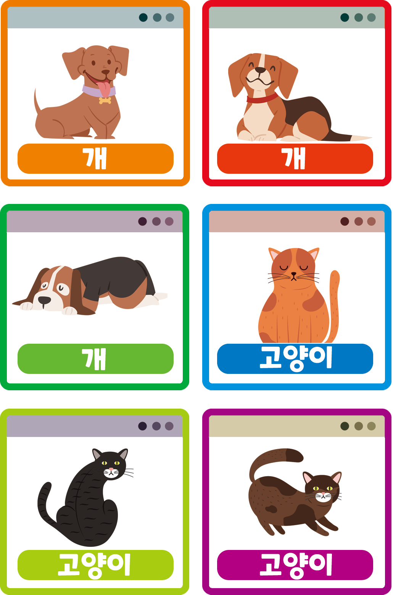
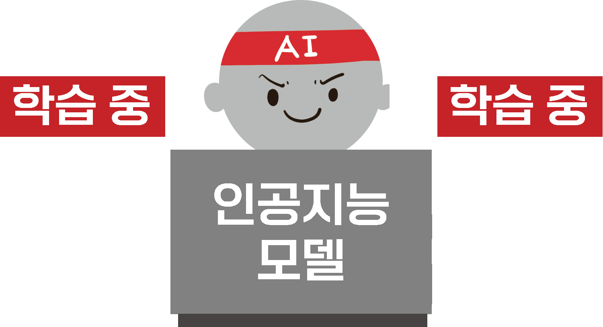
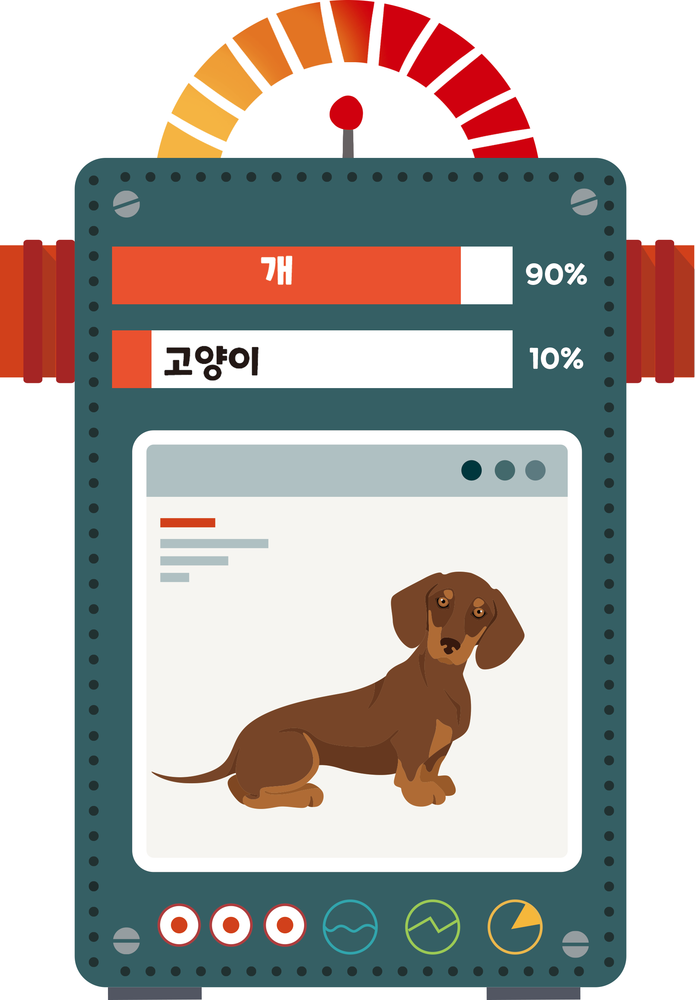

개념 알고 가기
인공지능의 학습
- 1 인공지능의 학습
- 인공지능은 데이터를 학습하여 스스로 규칙을 만들어 내며, 데이터는 학습의 재료 역할을 한다.
- 학습을 마치면 모델은 새로운 데이터를 분석하거나 문제를 해결하는 데 사용된다.
- 인공지능의 학습 과정
-
데이터 수집
-
모델 생성학습
-
예측 및 추론
인공지능은 데이터를 통해 학습하여 모델을 생성하며, 이를 새로운 상황에 적용하여 문제를 해결한다.